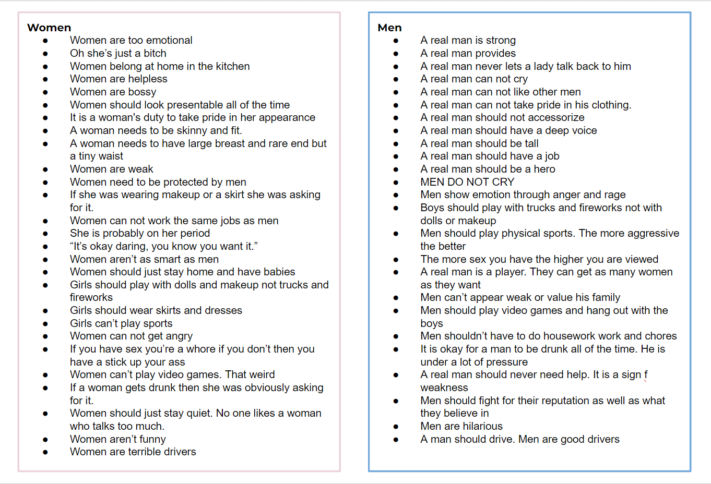

Personal Involvement Story:
For as long as I can remember there has always been things that girls can do such cook, clean and play
with dolls. And there are things that boys can do, play in the mud, football and video games. But I also
noticed that no matter what gender you are, you are still human. And humans should be able to do
whatever
makes them happy, right? Well what if I told you that in the society we live in your gender may have a
huge impact on how you percieve the world. Your gender also may play a huge part in how other treat you
and what oppurtunites you recieve. But that doesn't seem fair does it? Maybe you haven't noticed these
things because of how deeply routed in our society these issues are but hopefully this site and the
gendervsgender Instagram page can help to shine a bit more light on a situation that society wishes
would go back to being hidden and not talked about.
Hold on to your hats because it's about to get personal.
I grew up in a fairly small town in central
Ohio. In this town, there were very set expectations for how men were expected to act and behave. For
example in school, men were expected to participate in sports, and our agricultural programs and dress
in a masculine way either sports attire or work jeans and cowboy boots. Boys were also expected to be
extremely tough. They couldn’t cry or show any emotion other than anger without being called something
along the line of “sissy boy.” That term is putting it nicely.
As for myself, I thought the majority of the people at my school were bozos who needed to take a step
back to see the reality of the world outside of our little town. I didn’t notice the effects that this
tight-knit community was having on the men in it until I saw the signs in my little brother. Since my
brother could walk he has always been good at sports and doing outdoor activities. For the first part of
his life, he seemed to fit in just fine with the expectations that the community around us had set for
him. As he got older though I saw him struggling to fight back tears rather than just letting them out.
I saw him grow increasingly frustrated and irritable over minor inconveniences and I could tell that he
was struggling with some things mentally. When I brought it up to the male figures in my community they
all stated something along the line of that is just what boys have to do, he will learn to toughen up.
Around the 2nd grade, my parents noticed that my brother wasn’t performing the best in school and my
mother's solution was to yell at him and punish him but when he would cry she would say something about
how he shouldn’t do that because boys don’t cry. She wasn’t the only one putting this pressure on my
brother, his teachers were too. I had my own problems with my community but as far as learning went I
was an excellent student. So when my brother came in behind me and underperformed my old teachers would
compare him to me and ask him why he was not more like his sister. One teacher even told me that she
would take me back to her class in a heartbeat but she could not handle my brother.
The point of that story is that even by the time he was in 2nd grade my brother had been bullied into
not crying and not asking for help because it was a sign of weakness. This wasn’t done by the kids in
his grade it was done by the adults and their perception of gender-related stereotypes.
Men and women have different burdens to bear but that doesn’t mean that one gender's issues are more
valid than the other. My brother still has issues with letting his emotions out and the sad part is that
he started repeating the same narratives he was told as a child.
Recently when he was in the hospital for a severely deadly and painful infection that rendered him
unable to walk he refused to cry for the entire visit. He only would cry in the privacy of his own home.
When I was sitting there with him in the waiting room watching him scream in pain I told him, Logan, you
have to cry just let it out. He turned to me and said, “No Olivia I can’t cry because I am a man.” He
meant it, there was no sarcasm behind his statement.
When I was home for winter break earlier this year he was having trouble in one of his school subjects,
he and my father would sit down at the kitchen table almost every night to practice and study and night
after night I would hear my brother's voice break, again choking back the tears and he would say, “I am
never going to understand this Dad I’m just not smart enough.”
Girls are expected to be smart and boys are expected to be good at sports. That is how our community was
set up but it still didn’t make playing those roles any less difficult or traumatizing.
This is just one example of the pain that gender based stereotypes can cause. There are many more
stories and examples out there. I encourage you to take a look around your community and the people in
your life to see if their is anyone suffering from gender based stereotypes. If I had to guess I would
say that in part everyone in your life including you is effected by them.
Data and Journey Description:
This project has not been an easy one. Originally when I embarked on this journey I had no idea what I
wanted to do for this project. Nothing seemed fitting and nothing really spoke to me. Which is unusual
for me. Normally when I am given a creative project oppurtunity I excel. However this time it was
different. I felt lost and confused. That is until one night I got the idea to create an instagram page
that resembled that of an inspirational quotes page. I thought that if I filled it with gender basis and
sexist comments I could start conversations about how we need to be more equitable and stop using
genders as a way to define and harm one another.
So my journey began. I started writting down all of the gender stereotypes that I could think of.
I also interviews my friends which I will talk about a little later in this page. I also searched the
internet for the most common sexist and gender bases sterotypes.
The following is the list I made for both Male and Female Based Stereotypes:

From there I went straight to canva to start creating my posts. Once I had a mock up of a few posts I
put them on Instagram and began following random people.
I tried so many things to get peoples attention for my account.
I followed several sets of Instagram groups such as future and current Miami University students,
feminists and masculine, gym and workout enthusiasts, video gamers, and sexist meme pages. I did this in
hopes to get
as wide of interaction and data collection as possible. However orignally I wanted my main audience to
be the Miami Student Body, I had to widen my search in attempt to get more interaction with the content.
After that didn't work, I wrote on whiteboards around Laws Hall with the Instagram handle asking Miami
Students to check it
out and interact.
Additionally, I created a QR code poster that linked to the Instagram page and shared it at the Spring
2023 ETBD Student Expo. Sadly I myself could not participate because I had work at 5 and the event
started at 6. I don't believe that my poster got much interaction. So I hung up a few more QR codes
around campus and again I don't believe those got much traffic.
As of 5-2-2023, I have very minimal interaction with the GendervsGender Instagram page. It seems that
only one person has interacted with it at all.
So overall it is not a great success.
As of 5-9-2023, There has been slightly more interaction with the page but mostly random likes from
people in the 228 class. I follow 332 people (it would be more but Instagram blocked me from following
people.) and I have 31 followers and 32 posts.
So as a last resort I sat my friends down and had them interact with the Instagram page and tell me
their thoughts about the content and posts.
If you are insterested in seeing the posts you can check out the
@GendervsGender page on Instagram or hop over
to the
Posts tabs near the top of the page.
I was hoping that this Instagram page would start a conversation about hidden issues that come with our
genders however perhaps I missed the mark. I wonder if the content I created turned people away before
interacting. I was hoping that the content would appear so outragous that people would interact by
commenting on how terrible my post content was.
Interview Overview:
I conducted 5 interviews, 4 with men and 1 with a woman. I had originally planned on making it an even
number for both genders but those plans fell through. I also thought that because I myself am a woman
and I have had recent conversations with other women about some of the discussed topics I could count
that as good enough research.
My participants gave very interesting and in-depth answers to my questions which I will list below.
First Round:
What are your thoughts on the Feminist movement?
What does the word Feminism mean to you?
What does it mean for someone to be masculine?
What issues do you believe the opposite sex has to deal with in their life?
Do feel that your sex has it harder than the other?
Do you believe that one sex is superior to another?
What are your thoughts on “cross-dressing”?
Tell me a story about a time when you noticed there was a battle between the sexes.
What are some things that society deems okay for men to do but not women?
What are some things that society deems okay for women to do but not men?
What are some female-based gender stereotypes that you have heard of?
What are some male-based gender stereotypes that you have heard of?
Setting everything else we have talked about aside, tell me some things that you are struggling with in
general. Not from the viewpoint of a man or woman but as a human.
I used these questions to uncover deeper issues in both genders and how people view the opposite gender.
It seems that people are somewhat aware of issues that face the opposite gender but part of the main
issue I noticed is that no one seemed comfortable talking about issues that face men.
If you are interested in how these interviews went you can hop over to the
Videos page listed at the top of the page.
Reactions Overview:
Everyone I showed the page to immediately took an interest in it and wanted to know more. My friends who
interacted with the site found some of the posts to be very funny. The idea that someone could be so
sexist today made them laugh. Which made me wonder if perhaps I took things a bit too far. I thought I
was being ironic and clever by using these extreme stereotypes to stir up conversation but instead it
just made my viewers laugh. Which in part could be because they knew I was the ones asking the
questions.
I wish I would have recieved more interaction with this page however I am happy with the content I created.
If you are interested in checking out the reaction videos, you visit the
Videos page listed at the top of this site.